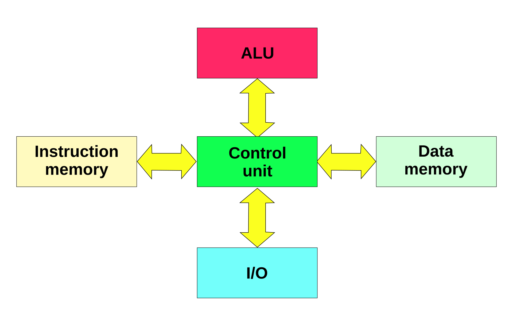

The Von Neumann architecture uses a single memory for both data and instructions, leading to potential memory access conflicts known as the "Von Neumann bottleneck." The simplicity of this architecture makes it inexpensive to implement but limits its performance, especially in tasks requiring high throughput.
Technical Information:
Applications: Simple control systems, low-power embedded devices, educational platforms.
Harvard's architecture uses separate memory for instructions and data, allowing simultaneous access to both. This parallelism leads to much higher performance compared to Von Neumann architecture, making it suitable for embedded systems that require fast and deterministic processing.
Technical Information:
Applications: Microcontrollers (PIC, AVR), DSPs, high-speed control systems, real-time embedded applications.
RISC processors are built on the principle of using a simplified instruction set that allows faster execution of instructions. ARM Cortex processors, which dominate the embedded market, are based on RISC architecture. RISC processors generally achieve higher performance and power efficiency by executing simpler instructions in fewer clock cycles.
Technical Information:
Applications: IoT devices, mobile phones, industrial systems, automotive systems, and wearables.
CISC processors feature a larger and more complex set of instructions, allowing them to perform multiple operations in a single instruction. This can reduce the number of instructions needed for complex tasks, but the hardware is generally more complex and less power-efficient. Intel's x86 processors are a well-known example of CISC architecture.
Technical Information:
Applications: High-performance embedded systems, industrial control, automotive infotainment systems, general-purpose computing.
After exploring the key processor architectures, here's a detailed comparison of popular embedded processors, including technical details about their performance, power consumption, and applications.
| Processor | Architecture | Core Type | Clock Speed | Power Consumption | Applications | Key Features |
|---|---|---|---|---|---|---|
| ARM Cortex-M Series | 32-bit ARM (RISC) | M0, M3, M4, M7 | Up to 600 MHz (Cortex-M7) | Ultra-low power | IoT, automotive, wearables, industrial automation | Low power, real-time capabilities, integrated peripherals |
| ARM Cortex-A Series | 32-bit/64-bit ARM (RISC) | A7, A53, A72 | Up to 2 GHz (Cortex-A72) | Moderate to high | Smart devices, drones, robotics, high-end IoT | High performance, supports OS, multimedia support |
| RISC-V Processors | 32-bit/64-bit RISC-V (RISC) | RV32IM, RV64GC | Varies widely, typically 50 MHz to 1 GHz | Low to moderate | IoT devices, industrial automation, academic projects | Open-source architecture, customizable, growing ecosystem |
| AVR Microcontrollers | 8-bit AVR (Harvard) | ATmega, ATtiny | Up to 20 MHz | Very low | Hobbyist projects, education, small embedded devices | Simple architecture, widely used in educational tools like Arduino |
| Espressif ESP32/ESP8266 | 32-bit Xtensa (Harvard) | ESP32, ESP8266 | Up to 240 MHz | Low | IoT devices, smart home products, wireless applications | Wi-Fi, Bluetooth, low-cost, versatile |
| Microchip PIC Series | 8/16/32-bit PIC (Harvard) | PIC16, PIC18, PIC24 | Up to 120 MHz (PIC32) | Low to moderate | Industrial controls, automotive, consumer electronics | Wide range of peripherals, robust development ecosystem |
Interested in a more detailed discussion about Memory and how they work? Click the button below to dive deeper into the topic.
Read More About Memory